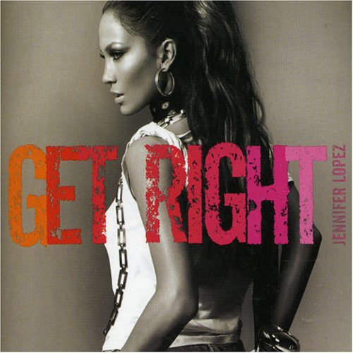

|  |
|
(Lyrics) Ya lookin' just a little too hard at me Feelin' just a little too close to me Ya sayin not quiet enough to me Ya pimpin's just a little too slow for me No doubt ya playin' around cool homie Got me thinkin' what is it you can do for me Trippin' ova it, a little more than I should be So let ya self go and get right with me I'm about to fill ya cup, we can get right Before the night is up, we can get get riiiiiiiight get riiiiiiight, we can get right I'm about to fill ya cup, we can get right Before the night is up, we can get riiiiiiight toniiiiiiight, we can get right Do you want more? (4x) Ya lips talkin' bout I play too much Can't a woman take advantage of what she wants My hands movin' oh so slow But probably you don't know All I need is ya hands right by my side Say whatever ya want, baby let's ride End whatever ya want so you need to sign Just put ya name on the dotted line I'm about to fill ya cup, we can get right Before the night is up, we can get get riiiiiiiight get riiiiiiight, we can get right. I'm about to fill ya cup, we can get right Before the night is up, we can get riiiiiiight toniiiiiiight, we can get right So much we've got to say But so little time And if tonight you're goin' up Don't leave love behind (Don't leave love behind) Take my hand, I'll show you how I'm about to fill ya cup, we can get right Before the night is up, we can get riiiiiiight get riiiiiiight, we can get right. I'm about to fill ya cup, we can get right Before the night is up, we can get riiiiiiight toniiiiiiight, we can get right |
(Letra en Español) Me estás mirando demasiado atento sintiéndote demasiado cerca de mí Me dices no tan callado Me vacilas demasiado flojo para mí Se nota que vas de enrollado Me tienes pensando qué podrías hacer por mí Ilusionándome más de lo que debería Así que déjate llevar y llévalo bien Te voy a llenar la copa, podemos llevarlo bien Antes de que la noche se acabe, podemos llevarlo bien Llevarlo bieeeeeen, llevarlo bieeeeeen, llevarlo bieeeeen Te voy a llenar la copa, pode mos llevarlo bien Antes de que la noche se acabe, podemos llevarlo bien, esta nocheeee, podemos llevarlo bien ¿Quieres más? (4x) Tus labios me dicen que tomo demasiado la iniciativa ¿es que una mujer no puede sacar provecho de lo que quiere? Muevo las manos, oh, lentamente Pero quizás no te des cuenta Quiero que pongas tus manos en mis caderas Di lo que quieras, cariño, montemos Acaba esto como quieras, pero indícamelo Sólo pon tu nombre en la línea de puntos Te voy a llenar ahora la copa, podemos llevarlo bien Antes de que la noche se acabe, podemos llevarlo bien Llevarlo bieeeeeen, llevarlo bieeeeeen, llevarlo bieeeeen Te voy a llenar ahora la copa, podemos llevarlo bien Antes de que la noche se acabe, podemos llevarlo bien, esta nocheeee, podemos llevarlo bien Tanto hay que decir Para tan poco tiempo Y si esta noche te creces No vayas a dejar atrás al amor (no vayas a dejar atrás al amor) Dame la mano, yo te enseñaré Te voy a llenar ahora la copa, podemos llevarlo bien Antes de que la noche se acabe, podemos llevarlo bien Llevarlo bieeeeeen, llevarlo bieeeeeen, llevarlo bieeeeen Te voy a llenar ahora la copa, podemos llevarlo bien Antes de que la noche se acabe, podemos llevarlo bien, esta nocheeee. |